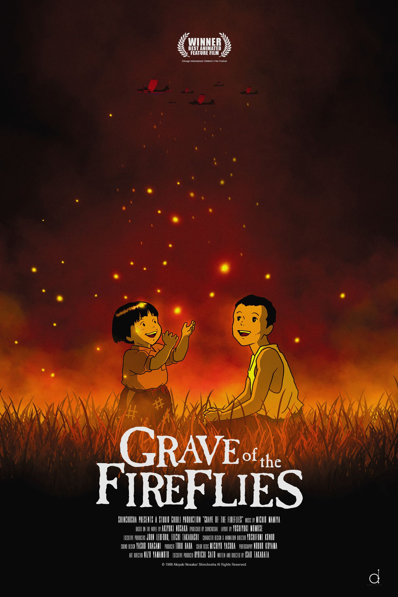
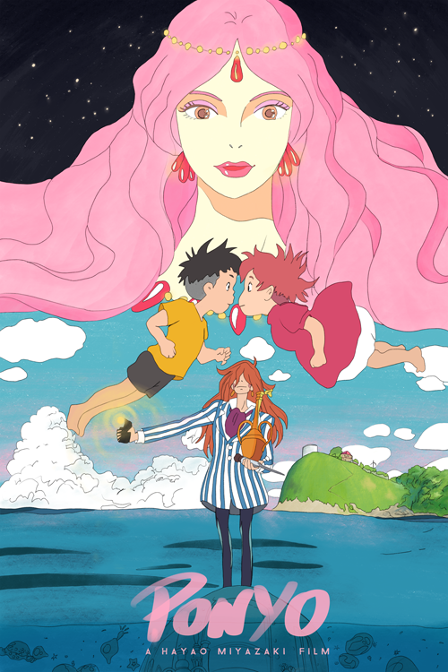

Totoro – A varázserdő titka |  A vadon hercegnője |
 Chihiro Szellemországban |
 A vándorló palota |
 Nauszika – A szél harcosai |
 Amikor Marnie ott volt |
 Kiki – A boszorkányfutár |
 Szentjánosbogarak sírja |
 Arrietty - Elvitte a manó |
 Laputa – Az égi palota |
 Porco Rosso – A mesterpilóta |
 Szél támad |
|  Ponyo a tengerparti sziklán |
 Kaguya hercegnő története |
 Macskák királysága |
Aya és a boszorkány |